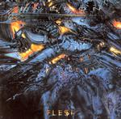

| Artist: | Everon |
| Title: | Flesh |
| Label: | Mascot Records M 7068 2 |
| Length(s): | 51 minutes |
| Year(s) of release: | 2002 |
| Month of review: | [10/2002] |
| 1) | And Still It Bleeds | 7.45 |
| 2) | Already Dead | 3.20 |
| 3) | Pictures Of You | 6.01 |
| 4) | Flesh | 14.18 |
| 5) | Missing From The Chain | 4.53 |
| 6) | The River | 4.05 |
| 7) | Half As Bad | 3.32 |
| 8) | Back In Sight | 7.20 |
Already Dead is a much shorter track, notwithstanding it has quite a bit of lyrics. Again we here strings, but also rather modern slow rhythms. The percussion has a bit of an industrial sound. Philipps is helped by some female vocals, but they are a bit on the mellow/slick side. This song is in fact a rather sugary ballad, notwithstanding the heavier guitars later on, and the bleepy keyboards. Not a very strong track.
Pictures Of you has an opening that strongly reminds of Simple Minds' Belfast Child. Then a guitar line starts with percussion rumbling in the back. Again, the music doesn't strike a chord in me, it is all a bit too easy, I think I prefer Everon with a bit more energy and drive.
Flesh is by far the longest track on the album, opening with medieval sounding acoustic guitar. The song has quite a classical sounding, orchestral beginning. Then speed and tension creep into the music, for a rather up-tempo piece of bombast which works rfeally well. Then the music turns for the waltzy with some nice melodies rising up. Time for some piano runs and a bit of romace. There is in fact often something quite romantic about the music of Everon on this album. The rough guitars that follow of course have to immediately belie the statement I just made. The vocals are aggressive and vocoded. This is progmetal, with a bit of difference though, not just the way it alternates with the more usual vocals, but also the technocratic feel of the heavy part. For the remainder, the song consists of alternating the various parts just described in a meaningful way. At two thirds we get a very classical/orchestral intermezzo after which the rough vocals return. A good track.
On Missing From The Chain the string orchestra figures again. This is once again a romantic ballad, a sad one with the string orchestra running through it. Not always do the vocal melodies convince me. The chorus here is okay, but the verse seems a bit identity less. Later on Philipps gets to sing a bit louder and more emotional.
The River is similar to Already Dead, both in style but also because of the added female vocals. A romantic duet again and a rather somber feel. The bombast does enter the picture here though.
Half As Bad does not have a strong melody, but the upbeat folky chorus with its percussion is a different matter. The final track is Back In Sight opens with somber electronics, the vocals are also far from happy sounding. The chorus turns out to be rather on the mellow side again. The noisy guitar that rides in the back and the gait of the keyboards keep it interesting though. At two thirds we move into a more atmospheric parts with all kinds of weird sounds and rhythm guitars going in the back. We conclude with chorus repeats.